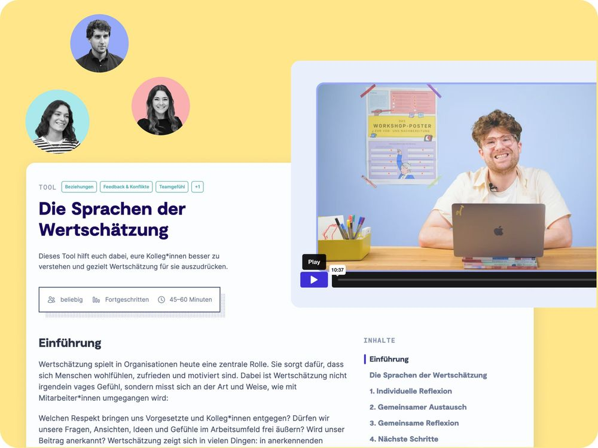

Solo
1 Zugang
299€
pro Jahr
zzgl. MwSt
Jährliche Abrechnung, jederzeit kündbar
Unsere Demokratie steht unter Druck. Umso wichtiger sind stabile Medienunternehmen und Verlage, die die notwendige Transformation meistern. Dabei hilft euch 9 Spaces.
Auf dieser Seite lernst du, wie die Transformation in der Medienbranche gelingen kann.

Kaum ein Bereich erlebt derzeit einen so intensiven Veränderungsdruck wie die Medienbranche. Der Bundesverband Digitalpublisher und Zeitungsverleger (BDZV) nennt drei Kernherausforderungen:
Die Veränderungszyklen in Redaktionen überschlagen sich: Ständig kommen neue Kanäle hinzu, neue Formate müssen erfunden werden. Redaktionen und Newsrooms werden zunehmend zu Netzwerken – entsprechend steigt die Organisationskomplexität erheblich.
Es reicht nicht mehr, einfach eine Zeitung zu drucken. Die heutige Produktrealität von Medienhäusern ist deutlich diverser und die Deutungshoheit darüber, was ein gutes Produkt ist, verschiebt sich weiter zu den Nutzer*innen. Entsprechend braucht es eine neue Nutzer*innenzentrierung und kurze, agile Entwicklungszyklen.
Der BDZV schreibt zum Einsatz von KI im Medienbereich: „42 % aller administrativen Tätigkeiten in Verlagen sollen in Zukunft durch KI automatisiert werden.“ Klar ist: KI wird zunehmend eine Rolle in den Produktionsprozessen von Medienorganisationen spielen. Diese zu gestalten, ist die Herausforderung moderner Medienmacher*innen.
Als kleiner Verlag brennen wir für unabhängige Medien. Unsere Methoden unterstützen euch dabei, die Transformation sicher zu meistern.

Den KI-Facilitator gibt’s exklusiv im Business- und Enterprise-Plan.

zzgl. MwSt
Jährliche Abrechnung, jederzeit kündbar
Zugang für mehrere Mitarbeitende in einem maßgeschneiderten Plan
Unser Team unterstützt dich gerne dabei, die perfekte Lösung für eure Organisation zu finden.